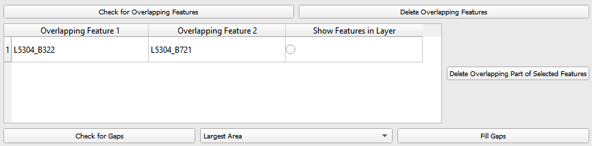
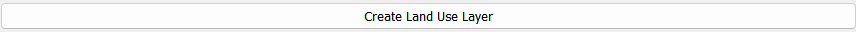
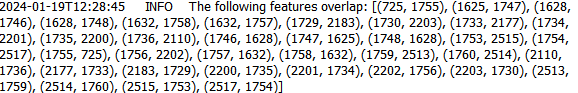

Step by Step¶
Select Sub-basin Layer¶
First, select the layer containing the sub-basins from the drop-down-menu that lists all polygon layers in your current QGIS project. After selecting the layer, the sub-basin layer’s field containing the unique identifier must be selected from the drop-down menu. Confirm your selection by clicking on the ‘Confirm Sub-basins’-Button. Upon clicking this button the Sub-basin layer is selected, and overlapping features and duplicates are removed. You can inspect the result in your QGIS project (layer ‘Sub-basins’).

Elimination of Hydrologic Response Units (HRUs)/small polygons¶
This part of the plugin was implemented to eliminate small polygons. Soil polygons and/or land use areas that fall below the specified size or percentage are eliminated. The percentage of all features with the same parameters is calculated by comparing the size of the polygons to its sub-basin’s area. These polygons are eliminated when confirming the soil/land use mapping, using the chosen elimination mode.
Secondly, HRUs are eliminated according to the specified parameters (sub-basin, soil and land use) during the intersection process. HRUs that fall below the specified size or percentage share are deleted and filled using the ‘Eliminate’ tool. You can select the elimination mode from the drop-down menu (find further information here).
Tip: You can apply different minimum sizes for soil/land use features and HRUs by adjusting the values before the desired step. For example, you can change the values before mapping the land use features or before the intersection process.
Select & Edit Soil Layer¶
Select Soil Layer
Choose the soil layer from the drop-down menu and confirm your selection by clicking ‘Confirm Soil’. Upon doing so, all valid geometries of this layer are selected and clipped to match the boundaries of the Sub-basin layer. During this step duplicate geometries are removed from the layer and the soil mapping table is populated with the fields of the soil layer.
Soil Mapping
This table contains Talsim soil parameters in the first column and all the field names of the soil layer in drop-down menus in the other six columns. These six columns represent the soil layers. In this step, users are required to map each Talsim parameter to its corresponding fields in the soil layer. The table below shows the necessary type for these parameters. Additionally, it also shows the required unit and restrictions of the parameters. If the user-mapped field has a different datatype, the plugin, where possible, converts the field’s values to the parameter’s type. If ‘Parameter not available’ is selected, that parameter will be added with null values.
To finalize the soil mapping, click ‘Confirm Soil Mapping’. If the user defines area/percentage thresholds, soil features below these thresholds are deleted during this step. The user can set a minimum size of the soil features [m²] and a minimum percentage of the soil features relative to the sub-basin’s area. Soil features that fall below the specified size or percentage share are deleted and filled using the ‘Eliminate’-tool. This creates a new layer, containing all fields from the soil layer and all parameters from the soil mapping table, assigned with values from their corresponding fields. If there is a datatype mismatch between the soil layer’s field and the parameter, a warning is logged.
Parameter
Unit
Type
Restriction
ID_Soil
int
NameSoil
string
max length 4
Description
string
BulkDensityClass
int
1 >= x >= 5
Category
int
1 = Sand, 2 = Silt, 3 = Clay
WiltingPoint
mm/m
float
0 >= x >= 1000
FieldCapacity
mm/m
float
0 >= x >= 1000
TotalPoreVolume
mm/m
float
0 >= x >= 1000
KfValue
mm/h
float
0 > x
MaxInfiltration
mm/h
float
0 > x
MaxCapillarySuction
mm/h
float
0 >= x
LayerThickness1
m
float
0 > x
Optional Soil Editing Steps
Before finalizing the soil layer, users have the option to perform some editing steps. Please refer to section Optional Editing Steps below for a detailed explanation of ‘Check for Overlapping Features’, ‘Delete Overlapping Features’, ‘Check for Gaps’ and ‘Fill Gaps’.
In addition to the option of deleting all overlapping parts (using button ‘Delete All Overlapping Features’), you can also selectively remove specific overlapping soil features. This can be done via the table that populates when you click ‘Check for Overlapping Features’. This table displays all overlapping soil features across two columns. For each pair of overlapping features, you can decide, which feature’s geometry should stay unchanged, and which should have its overlapping part removed from its geometry. In the third column, you can select features to highlight them in the soil layer, allowing for easy viewing. After you have identified all the unwanted overlapping parts, simply press ‘Delete overlapping part of selected Features’ to remove the overlapping parts from the selected features.

Create Soil Layer
This step dissolves the layer according to the Talsim parameters, removes the fields that are not required for Talsim and creates the soil layer used for the intersection.

Select and Edit Land use layer¶
Select Land use Layer
First, select the land use layer from the drop-down menu and confirm your selection by clicking ‘Confirm Layer’. Upon doing so, all valid geometries of this layer are selected and clipped to align with the boundaries of the sub-basin layer. During this process, any duplicate geometries within the layer are also removed.
Land use Mapping
The land use mapping table is populated similarily to the soil mapping table. The first column contains Talsim land use parameters and the second column contains drop-down menus with all field names of the input land use layer. Here, you must match each Talsim parameter (in the first column) with the corresponding field in the input layer (in the second column). The table below shows the necessary types for these parameters. Additionally, it also shows the required unit and restrictions of the parameters. If the user-mapped field has a different datatype, the plugin, where possible, converts the field’s values to the parameter’s type. If ‘Parameter not available’ is selected, that parameter will be added with null values. Only for pTAW 0,5 is used as default value, if the user does not insert a parameter.
After completing the mapping, click ‘Confirm Landuse Mapping’ to create a new layer containing the input fields from your layer and the Talsim parameter values. If the user defines area/percentage thresholds, land use features below these thresholds are deleted during this step. The user can set a minimum size of the land use features [m²] and a minimum percentage of the land use features relative to the corresponding sub-basin’s area. Land use features that fall below the specified size or percentage share are deleted and filled using the ‘Eliminate’-tool.
Parameter
Type
Unit
Restrictions
ID_LNZ
int
Name
string
RootDepth
float
m
0 >= x
RootDepthAnnualPatternId
int
PlantCoverage
float
%
0 >= x >= 100
PlantCoverageAnnualPatternId
int
LeafAreaIndex
float
0 >= x
LeafAreaIndexAnnualPatternId
int
RoughnessCoefficient
float
m⅓/s
0 >= x
KcCoeffAnnualPatternId
int
KyYieldAnnualPatternId
int
BulkDensityChange
int
pTAW
float
0 >= x >= 1
Optional Editing Steps for Land use Layer
After confirming the land use mapping you have the option to perform additional editing steps, such as deleting overlapping features and filling gaps. For more detailed information on these steps, please refer to section Optional Editing Steps.
In addition to the option of deleting all overlapping parts (using button ‘Delete All Overlapping Features’), you can also selectively remove specific overlapping landuse features. This can be done via the table that populates when you click ‘Check for Overlapping Features’. This table displays all overlapping landuse features across two columns. For each pair of overlapping features, you can decide, which feature’s geometry should stay unchanged, and which should have its overlapping part removed from its geometry. In the third column, you can select features to highlight them in the landuse layer, allowing for easy viewing. After you have identified all the unwanted overlapping parts, simply press ‘Delete overlapping part of selected Features’ to remove the overlapping parts from the selected features.
Create Land use Layer
Clicking ‘Create Land Use Layer’ dissolves the layer according to the Talsim parameters, removes any fields that are not required for Talsim and generates the land use layer that will be used for intersection.



Intersection of Layers¶
This step results in the creation of the files: BOD, BOA, LNZ and EFL, which can be used as input files for Talsim. To calculate the slope for each HRU, the user must input a Digital Elevation Model (DEM). This model is used to calculate the mean slope for each of the created HRUs. To generate the HRUs, the three layers (sub-basins, soil and land use) are intersected in a first step. The user can set a minimum size of the HRUs [m²] and a minimum percentage of HRUs relative to the sub-basin’s area (see above). The sum of the areas of all HRUs with the same parameters is compared with the area of the corresponding sub-basin. HRUs that fall below the specified size or percentage share are deleted and filled using the ‘Eliminate’-tool. You can select the elimination-mode from the drop-down menu (find further information here).
Gaps within the sub-basin layer are left unfilled, while all other gaps are appropriately filled. Any overlapping features within the resulted intersected layer are removed.
The resulting layers are then automatically added to the current QGIS project.

Save Layers¶
In the final step, users can choose to export the processed layers in either ASCII format (for Talsim NG4), SQLite format (for Talsim NG5), or both.
ASCII-Export
To export in ASCII format, users need to specify only the ASCII file name. The plugin will generate all relevant files with the appropriate extensions (.EFL, .BOD, .BOA, .LNZ), ensuring compatibility with Talsim NG4.
SQLite Export
For SQLite export, users must select an existing Talsim database (e.g., one created using QTalsim – Sub-basins preprocessing) and specify the scenario to which the data should be assigned. Tables HydrologicalReponseUnit, SoilType, SoilTexture and LandUse of the specified scenario will be filled. This export is compatible with Talsim NG5.
After configuring the desired export options, users must click ‘Select Output Folder’ to choose the directory where all outputs will be saved. This includes both the ASCII files and the GeoPackage export.
Finally, clicking ‘Save’ will:
Export the layers in the selected format(s)
Store the resulting data in a GeoPackage under a user-defined name

Optional Editing Steps¶
For both the soil layer and the land use layer, the user has the option to perform additional editing steps.
Check for Overlapping Features
This function checks for overlapping features within the layer. It identifies features that are either partially or completely overlapping. The overlapping part must be greater than 10 m²; otherwise, it is ignored. Therefore, overlapping parts below 10 m² are not indicated in the table and are not removed by the plugin. The feature IDs of the overlapping features are logged in the QTalsim-Log and are also indicated in a table below this button. Additionally, a layer named ‘Layer with overlapping features’ is added to the QGIS project. You can then inspect the overlapping features by reviewing this layer’s attribute table by searching for the overlapping feature IDs or by selecting the features in the table (see “Delete Overlapping Part of selected Features”).

Delete All Overlapping Features
This function removes all overlapping parts of a layer. The overlapping part must be greater than 10 m²; otherwise, it is ignored. Therefore, overlapping parts below 10 m² are not removed by the plugin. If two polygons overlap, the overlapping part is assigned to the smaller of the two polygons.
Delete Overlapping Part of selected Features
In addition to the option of deleting all overlapping parts (using button ‘Delete All Overlapping Features’), you can also selectively remove specific overlapping soil/land use features. This can be done via the table that populates when you click ‘Check for Overlapping Features’. This table displays all overlapping soil/land use features across two columns. Remember, it only shows overlapping parts that are greater than 10 m². For each pair of overlapping features, you can decide, which feature’s geometry should stay unchanged, and which should have its overlapping part removed from its geometry. In the third column, you can select features to highlight them in the soil layer, allowing for easy viewing. After you have identified all the unwanted overlapping parts, simply press ‘Delete overlapping part of selected Features’ to remove the overlapping parts from the selected features.
Check for Gaps
This function checks for gaps in the soil/land use layer. It identifies not only gaps within the layer itself but also gaps that occur along the boundary of the sub-basin layer. A separate layer, which includes all detected gaps from the soil or land use layer, is then added to the QGIS project. This allows the user to inspect and analyze these gaps more closely.
Fill Gaps
This function fills all detected gaps in the layer using the Eliminate-tool. You can specify the elimination-mode from a drop-down menu (find further information here). The result of this step is a layer free of gaps and matching the extent of the sub-basin layer.
In general, it is recommended to delete the overlaps before and after filling gaps. Particularly complex geometric structures may result in new overlaps or gaps. The plugin in some cases may struggle to automatically fill very small gaps or delete very small overlaps, particularly for complex geometries. If overlaps & gaps persist after several attempts to delete overlaps and fill gaps, manual deletion is recommended (if necessary).